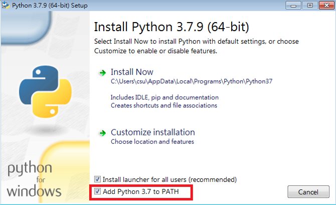
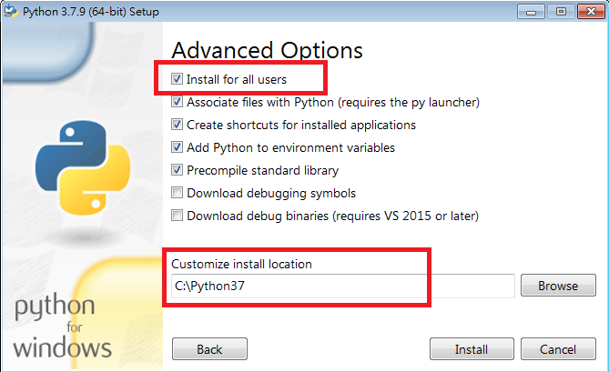
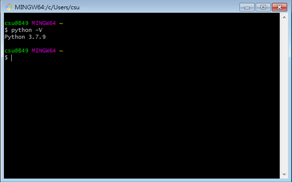

安裝python與模組 相關應用教學 首頁 環境安裝(windows) 下載python 可使用git bash或是使用cmd 命令提示字元安裝python相關模組 下載git(選用)  將Add Python 3.7 to PATH打勾  將Install for all users打勾並更改路徑  使用git bash或是使用cmd 命令提示字元輸入python -V 檢查是否安裝成功